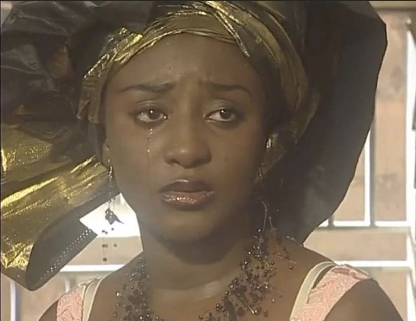
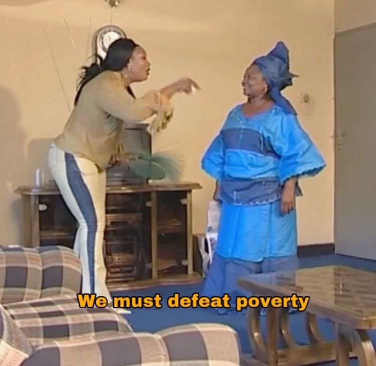
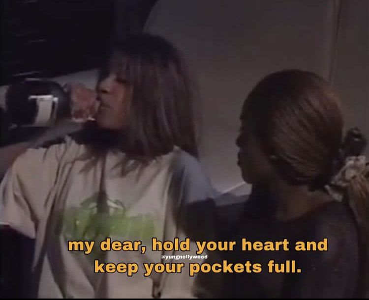
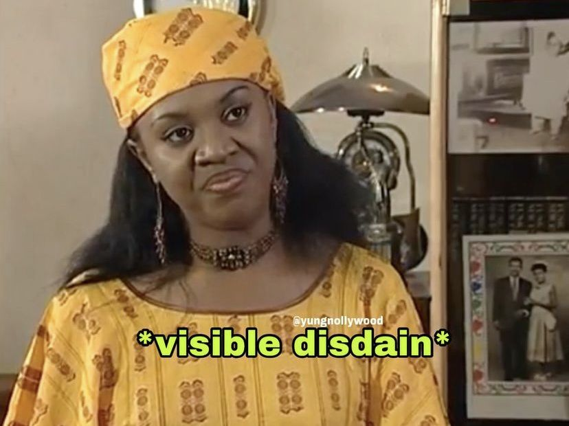

What do witch doctors, a piece of fufu with an eye and mouth, scheming prostitutes, and love triangles that end with dramatic gun-pointing have in common? These are all plots of a Nollywood movie, ofcourse. Nollywood, coined after the term ‘Hollywood’ and the 2nd biggest movie industry ‘Bollywood’, is the thriving and fast-paced film industry based in Nigeria, hence Nolly…Get it? An industry that has made a name for itself in its own right, yet a very neglected one in the eyes of the West and major film houses due to its perceived lack of quality and story. Who’s the authority to say that? That’s a story for another day.

Let’s take a closer look at the history of Nollywood. After the independence of many African countries in the continent, many Africans sought out to explore all mediums of art that will express the new found freedom, grievances, worries and other aspects of local life through art. One of the newer ways of doing this was via cinema. Colonizers refused Africans to partake in cinema, perhaps understanding that film is a powerful form of expression and could probably gain traction and, God forbid, maybe even inspire a revolution. So film was banned (for Africans). The gain of independence however began a renaissance throughout out the continent and Nigeria was not left out. Movies were being made about folklore such as Black Goddess, directed by Ola Balogun. It was new and different at the time where most Nigerians were getting their fixes of entertainment from Hollywood movies. Cinemas now were not only showing the movie giants of the US, but were now also showing folks that resemble them and subject matter that they could closer relate to.

While other countries took cinema and ran with it, e.g. countries such as Mali, Nigerians in the movie industry took a turn downhill in terms of quality. Movies were being shot with home cameras, sound goes up and down and the soundtracks were questionable. The low budgets didn’t deter movie makers from creating, however. With the little that they had, they continued to churn out movies far more than their more wealthy Western -and Eastern- counterparts. The 90’s and early 00’s were what people call the ‘golden age of Nollywood’. It was a time where stars such as Genevieve Nnaji, Eucharia Anunobi, Olu Jacobs, and a host of other names became household.


A resurgence of interest in Nollywood has come about on social media in recent times due to accounts such as Nollybabes, and Yung Nollywood and with the peak of interest in Y2K fashion, there comes a newfound appreciation and a fondness for Nollywood. It is both nostalgic and intriguing to watch the movies again, many remembering watching scary scenes as children, but now watch with new, grown eyes and see the humor in it. There is a pride that has come about in bringing back Nollywood as it is something that has become distinctly African, specifically Nigerian.
The movies are celebrated and are still being watched ironically and unironically. The ‘low quality’ of the movies added to the charm of the movies and humor. Nollywood is a marker of the African persistence of making art despite being haunted by poverty, corruption in the country and lack of funding for the arts on the continent and for this, it is to be celebrated, and not scoffed at as an afterthought within the cinematic community. Modern day Nollywood movies are being made with much better quality almost at par to Western films, but they can never replace the classics that propelled the industry before the contemporary counterparts. A nod of respect must be given to the films, their plots, and the uncanny beauty and hilarity of the Nollywood films that came before.